PPC-A55-070¶
Version 1.1
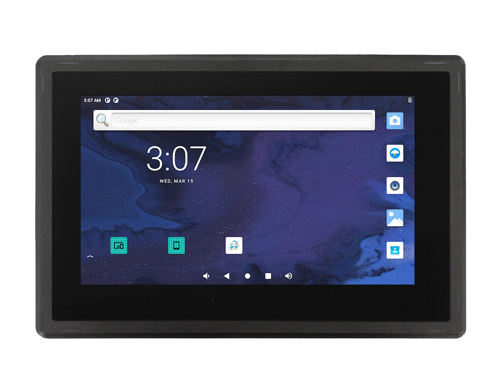
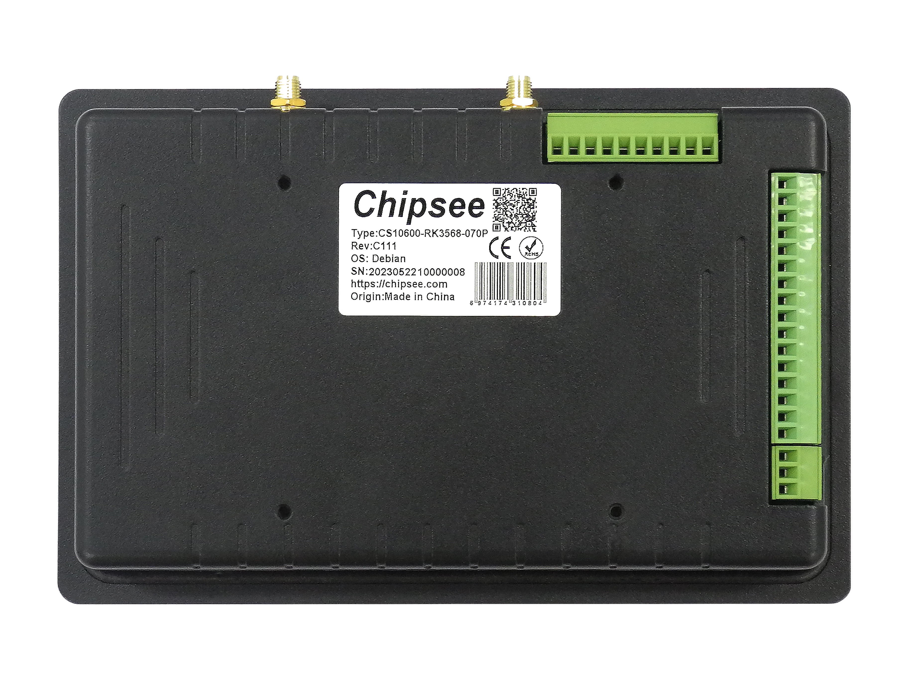
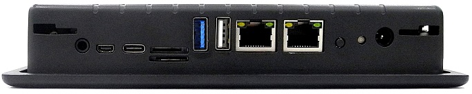
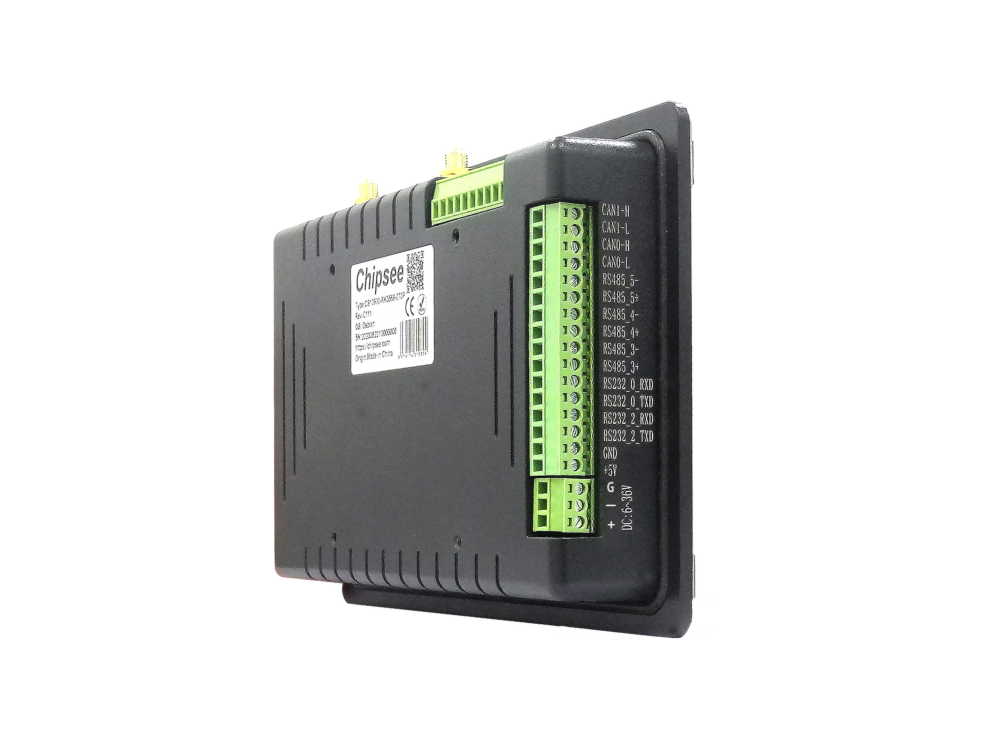
Product Overview¶
The Cortex®-A55 series PPC-A55-070 (PN: CS10600-RK3568-070P) is a high-quality IP65-compliant industrial panel PC. It features a 7” ten-point capacitive touch screen with a resolution of 1024 x 600 pixels and brightness of 500 cd/m2.
It is available both as an embedded solution and as a device hosed in an aluminum casing with bezels, thus facilitating different installation options:
Installation on an industrial cabinet
Integration with the existing equipment
The PPC-A55-070 Industrial Panel PC is based around the powerful RK3568 System on Chip (SoC), powered by the Rockchip RK3568 low-power processor which integrates a quad-core Cortex®-A55 processor.
The RK3568 supports multi-format video decoders and has a high-performance RAM (LPDDR4X) capable of sustaining demanding memory bandwidths. It also provides a complete set of peripheral interfaces.
Ordering Options¶
Chipsee products can be customized during the ordering process. The product will be shipped with the pre-installed factory defaults if no extra requirements are specified. The table in the Hardware Features section provides information about the default options bundled with the product.
Note
You can order the PPC-A55-070 from the official Chipsee Store or from your nearest distributor.
Operating System¶
This product comes with a pre-installed OS of your choice. Please see the list below for the supported OSes, which can also be obtained from the Software Documentation section, along with the detailed installation instructions.
Debian 11
Android 11
Buildroot Linux Qt 5.15
Warning
The Software Documentation section provides a detailed instruction on how to install different OSes on your own. However, bear in mind that Chipsee can’t take the responsibility of inadequate installation procedure. If you “brick” your device, please contact Chipsee Technical Support at support@chipsee.com for further assistance
Optional Features¶
The PPC-A55-070 Industrial Panel PC does not include 4G/LTE module by default. The module is optional and can be selected at the Chipsee store during the ordering process.
Warning
Installation, repair, and maintenance tasks should be performed by trained personnel only. Chipsee does not bear any responsibility for damage caused by inadequate handling of the product.
Hardware Features¶
The PPC-A55-070 Industrial Panel PC offers a broad range of performance and connectivity options for scalable integration, providing expandability according to future needs. Some of the key features are listed in the table below.
PPC-A55-070 |
|
|---|---|
CPU |
Rockchip RK3568, Quad-core Cortex-A55 (2.0GHz) |
RAM |
2GB LPDDR4 |
eMMC |
16GB |
SSD |
N/A |
Storage |
TF Card, Supports up to 128GB SDHC |
Display |
7” LCD, 1024 x 600, High Brightness: 500 cd/m2 |
HDMI |
1 x HDMI-D (Micro-HDMI) Out |
Touch |
5-point capacitive touch screen |
USB |
1 x USB 2.0 HOST, 1 x USB 3.0 HOST, 1 x USB Type-C |
LAN |
2 x RJ45, GbE |
POE |
Supported for 1 x optional POE RJ45 |
Audio |
3.5mm Audio In/Out Connector, 2W Internal Speaker |
Buzzer |
Yes |
RTC |
High accuracy RTC with farad capacitor, can work 1 week after power off (default). High accuracy RTC with lithium coin battery, can work 3 years after power off (optional). |
RS232 |
default 2 x RS232 (Optional 6 x RS232 at most, include 1 debug port)1 |
RS485 |
default 3 x RS485 at most1 |
CAN |
default 2 x CAN |
GPIO |
8 Channels Isolated IO, 4 x Input and 4 x Output |
WiFi/BT |
Integrated WiFi/BT Module |
4G/LTE |
Supported, Optional |
Power Input |
From 6V to 36V |
Current |
550mA Max at 12V |
Power Consumption |
6.6W Max |
Working Temperature |
From 0°C to +60°C |
OS |
Android 11, Debian11, Buildroot Linux Qt 5.15 |
Dimensions |
PPC-A55-070 (PN: CS10600-RK3568-070P): 188.05 x 123.11 x 33.20mm |
Weight |
PPC-A55-070 (PN: CS10600-RK3568-070P): null |
Mounting |
PPC-A55-070 (PN: CS10600-RK3568-070P): Panel, VESA |
- 1(1,2)
This product has 6 x UART channels in total. The default configuration is 2 x RS232 and 3 x RS485, include 1 debug port. UART can be swapped between RS232 and RS485 modes easily, if you need a different RS232/RS485 configuration, please get in touch with the Chipsee Technical Support at support@chipsee.com
Power Input¶
The PPC-A55-070 Industrial Panel PC can be powered by a wide range of input voltages: From 6V to 36V DC.
There are two DC input interfaces on this device: a 3-pin, 3.81mm terminal, and a 2.1mm I.D x 5.5mm O.D x 9.5mm DC connector.
{kind=link}
Power Input
Note that the “+” sign represents the positive power input, and it is printed both at the casing and as a silk-screen on a PCB of the embedded version. The “-” terminal is shorted to the ground.
Power Input Definition |
||
|---|---|---|
Pin Number |
Definition |
Description |
Pin 1 |
Positive Input |
DC Power Positive Terminal |
Pin 2 |
Negative Input |
DC Power Negative Terminal |
Pin 3 |
Ground |
Power System Ground |
Note
The system ground “G” is connected to power negative “-” on board.
For a proper DC power connector, refer to the figure below.
{kind=link}
DC Jack
Touch Screen¶
The PPC-A55-070 Industrial Panel PC uses a 5-point capacitive touch screen.
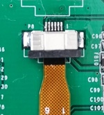
Figure 577: Capacitive Touch Screen Connector¶
Attention
A capacitive touch screen is susceptible to power noise and Electromagnetic Radiation (EMR). It may cause LCD ripples or even capacitive touch malfunction. If using a capacitive multi-touch test application, you might notice the touch points float erratically across the display. There are several solutions to this problem:
Use a high-quality Power Adapter Unit (PSU) with low EMR. You can also provide power from a battery.
Make sure that the PPC-A55-070 Power Input connector (pin 3) is properly connected to the Power System Ground to provide sufficient EMI shielding and eliminate the problem entirely.
Bad GND problems can also be confirmed by touching pin 3 of the Power Input connector with one hand while operating the capacitive touch screen with the other hand. In this case, the operator’s body acts as the Power System Ground.
Connectivity¶
There are many connectivity options available on the PPC-A55-070 industrial PC. It has 1 x USB 2.0 HOST, 1 x USB 3.0 HOST, 1 x USB Type-C, 2 x RJ45, GbE (RJ45) Ethernet connector supporting up to 1 Gbps, and 5 x UART terminals (RS232/RS485/CAN).
RS232/RS485/CAN¶
The serial communication interfaces (RS485, RS232, and CAN) are routed to a 16-pin 3.81mm terminal, as illustrated on the figure below.
{kind=link}
RS232 RS485 CAN Pins
The table below offers more detailed description of every pin and its definition:
RS232 / RS485 / CAN Pin Definition: |
||
|---|---|---|
Pin Number |
Definition |
Description |
Pin 16 |
CAN1_H |
CAN H signal |
Pin 15 |
CAN1_L |
CAN L signal |
Pin 14 |
CAN0_H |
CAN H signal |
Pin 13 |
CAN0_L |
CAN L signal |
Pin 12 |
RS485_5- |
CPU UART5, RS485 –(B) signal |
Pin 11 |
RS485_5+ |
CPU UART5, RS485 +(A) signal |
Pin 10 |
RS485_4- |
CPU UART4, RS485 –(B) signal |
Pin 9 |
RS485_4+ |
CPU UART4, RS485 +(A) signal |
Pin 8 |
RS485_3- |
CPU UART3, RS485 –(B) signal |
Pin 7 |
RS485_3+ |
CPU UART3, RS485 +(A) signal |
Pin 6 |
RS232_0_RXD |
CPU UART0, RS232 RXD signal |
Pin 5 |
RS232_0_TXD |
CPU UART0, RS232 TXD signal |
Pin 4 |
RS232_2_RXD |
CPU UART2, RS232 RXD signal, Debug Port |
Pin 3 |
RS232_2_TXD |
CPU UART2, RS232 TXD signal Debug Port |
Pin 2 |
GND |
System Ground |
Pin 1 |
+5V |
System +5V Power Output, No more than 1A Current output |
Attention
RS485_3,RS485_4 and RS485_5 can control the input and output direction automatically. There’s no need to control it from within the software.
The 120Ω match resistor for the RS485 is mounted by default.
The 120Ω match resistor for the CAN bus is NOT mounted by default.
USB Connectors¶
There are 2 x USB HOST and 1 x USB DEVICE (for flashing OS) ports onboard: 1 x USB 2.0 HOST, 1 x USB 3.0 HOST, 1 x USB Type-C , as shown in the figures below.
{kind=link}
USB 2.0 HOST Port (embedded / enclosed PC version)
{kind=link}
USB 3.0 HOST Port (embedded / enclosed PC version)
{kind=link}
USB Type-C Port (embedded / enclosed PC version)
Warning
Be careful not to touch surrounding electronic components accidentally while plugging USB devices into the embedded IPC version.
LAN Connectors¶
LAN (RJ45) connector provides 2 x RJ45 Ethernet (including 1 x optional POE port: LAN0) Ethernet connectivity over standardized Ethernet cables as shown in the figure below. The integrated Ethernet interface supports up to 1 Gbps data throughput.
{kind=link}
RJ45 LAN Connector
Note
Use CAT5 or better cables to achieve full data throughput over maximum distance defined by the 1000BASE-T standard (100m).
WiFi & BT Module¶
The PPC-A55-070 Industrial Panel PC is equipped with the popular Realtek RTL8821CS WiFi/BT module which supports BT/BLE 2.1/3.0/4.2, as well as 802.11ac/abgn 433Mbps 2.4/5.8 GHz Wireless LAN (WLAN).
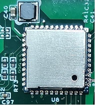
Figure 578: RTL8821CS WiFi/BT Module¶
The PPC-A55-070 includes an SMA connector for an external WiFi/BT antenna, as illustrated in the figure below.
{kind=link}
WiFi+BT Antenna SMA
4G/LTE Module¶
The PPC-A55-070 Industrial Panel PC is equipped with a mini-PCIe connector that can connect a 4G/LTE module. The customer will also need a SIM Card Holder and a 4G/LTE Antenna Connector to ensure 4G/LTE works on the PPC-A55-070. SIM card does NOT support hot plug. Power off before inserting or removing SIM card.
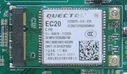
Figure 579: mini-PCIe Connector & 4G Module¶
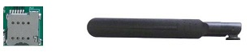
Figure 580: SIM Card Holder & 4G Antenna¶
{kind=link}
SIM Card Direction
Attention
The product does not come shipped with the 4G/LTE module by default. The customer can choose the 4G/LTE module option when placing an order, we will install all the necessary components.
TF Card & SIM Card Slot¶
The PPC-A55-070 Industrial Panel PC features 1 x TF Card (micro SD) slot and 1 x SIM Card slot. TF Card can address up to 128GB of storage.
{kind=link}
TF (micro SD) Card & SIM Card Slot
Note
The product does not come shipped with the TF Card by default.
Audio Connectors¶
The PPC-A55-070 Industrial Panel PC features some audio peripherals. It has a 3.5mm audio input/output jack, an internal speaker, as well as a small buzzer.
{kind=link}
Audio Connector (enclosed PC version)
The miniature 2W embedded speaker is handy for audio reproduction, the small buzzer can play alarm/notification sounds.
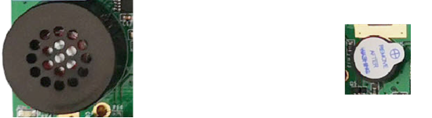
Figure 581: 2W Micro Speaker and Buzzer¶
Attention
By plugging in the headphone cable, the internal speaker will be disabled automatically.
HDMI Connector¶
The PPC-A55-070 Industrial Panel PC is equipped with 1 x HDMI-D (Micro-HDMI) Out port. The HDMI connector allows connecting an additional (external) monitor. HDMI output resolution can be configured by the software.
{kind=link}
HDMI Connector
{kind=link}
GPIO¶
The PPC-A55-070 Industrial Panel PC features a 10-pin 3.81 mm terminal that provides 8 x opto-isolated GPIO pins, of which 4 x are output, and 4 x are input pins. The 10-pin terminal also includes an isolated PSU input in the range of 5 to 24 VDC. The exact pinout is given in follow table.
The GPIO HIGH output level corresponds to the voltage connected at the Isolated Power Input, while the GPIO LOW output level corresponds to the isolated Ground Input. Each GPIO output can drive loads up to 500mA, enough to drive various applications directly, such as relays or solenoid valves.
{kind=link}
GPIO Terminal (enclosed PC version)

Isolated GPIO reduced schematic
GPIO Pin Definition: |
|
Pin Number |
Definition |
Pin 1 |
Isolated Power Input2 |
Pin 2 |
Isolated Ground Input |
Pin 3 |
OUT1 |
Pin 4 |
OUT2 |
Pin 5 |
OUT3 |
Pin 6 |
OUT4 |
Pin 7 |
IN1 |
Pin 8 |
IN2 |
Pin 9 |
IN3 |
Pin 10 |
IN4 |
- 2
- If the isolation is not a requirement, it is possible to use a non-isolated PSU instead.It is also possible to use the onboard 5V power supply: it can be re-routed to the Isolated Power Input pin by populating R251 and R247 PCB footprints with 0Ω resistors.Note that in this case, the Isolated Power Input pin will become an output for the onboard 5V power supply.
Mounting Procedure¶
You can mount PPC-A55-070 with VESA mounting: 75 x 75 mm, 4 x M4 (6mm) screws.
You can also mount PPC-A55-070 with panel mounting method.
Attention
Please make sure the display is not exposed to high pressure when mounting into an enclosure.
You can find detailed information about mounting in the Mount IPC Guide.

Figure 582: Panel mounting¶
Mechanical Specifications¶
For PPC-A55-070, the outer mechanical dimensions are 188.05 x 123.11 x 33.20mm (W x L x H).
Please refer to the technical drawing in the figure below for details related to the specific product measurements.
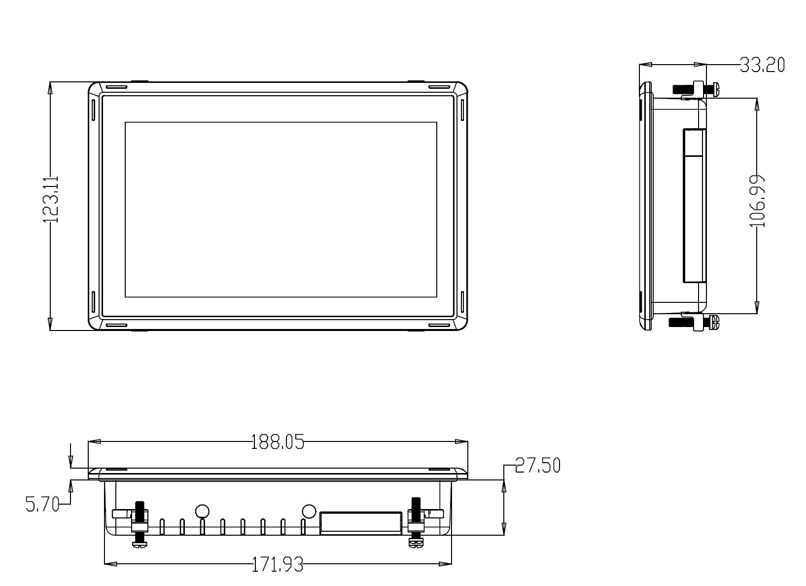
Figure 583: PPC-A55-070 Technical Drawing¶
3D Model¶
PPC-A55-070 3D model can be viewed in the online doc in a web browser, if you are reading from the PDF version, please visit the online doc.
- pdf-build
False
Android 11 OS¶
Android 11 OS on RK3568 User Manual
This is the software manual for RK3568 Chipsee industrial PC. If you’ve never developed on this hardware with an Android 11 OS, this manual can get you started quickly.
Supported Chipsee PCs: all Chipsee RK3568 based industrial PCs, including but not limited to:
CS12720-RK3568-050P
CS10600-RK3568-070P
CS12800-RK3568-101P
CS10768-RK3568-121P
CS19108-RK3568-133P
CS10768-RK3568-150P
CS19108-RK3568-156P
CS12800-RK3568-215P
CS19108-RK3568-236P
CS-RK3568-BOX
When you develop software for the Chipsee industrial PC, you can open the hardware document beside this software document, to aid you in wiring your devices.
In this document, main topics are:
How to connect to the hardware from your workstation.
How to use the hardware resources such as RS232, RS485 and GPIO, etc.
How to install a new operating system.
Connect From Workstation¶
There are 4 ways to connect to your Chipsee industrial PC from your workstation:
From Serial RS232 port
From USB Type-C port
From Ethernet
From Wi-Fi
Let’s take a look at these connecting methods one by one.
Install Android Platform Tools¶
If you intend only to use serial port RS232 to connect to Chipsee industrial PC, you can skip this part, debugging with serial port does not require installing Android Platform Tools.
If you want to control or test your Android 11 based Chipsee industrial PC from your workstation, such as your PC or laptop, one tool is required to be installed on your machine.
Since the Chipsee industrial PC runs an Android OS, like developing on any other Android devices (phones, tablets, TVs, etc), the tools and knowledge apply to developing on Chipsee industrial PC as well. We will need a tool called Android Platform Tools to be installed on your workstation. You can refer to Google Android’s official developer doc to learn how to do that, here is a link to download this tool: https://developer.android.com/tools/releases/platform-tools. If the link is dead when you’re reading this document, you can search for Android Platform Tools in your favourite search engine to find out where it has gone to. Then download and install the distribution that matches your workstation’s platform (MacOS, Linux or Windows).
Instead of Android Platform Tools, you can also get the Android Studio, it includes a SDK Manager that helps you download the SDK tools and platforms we’ll need. Android Studio is much more powerful and requires more space and time to install. If you only need the command line tool, you’re fine with just the Android Platform Tools alone.
If you have successfully installed the Android Platform Tools, you can confirm that by opening a terminal window and type a command adb, you should see multiple lines of instructions.
{kind=link}
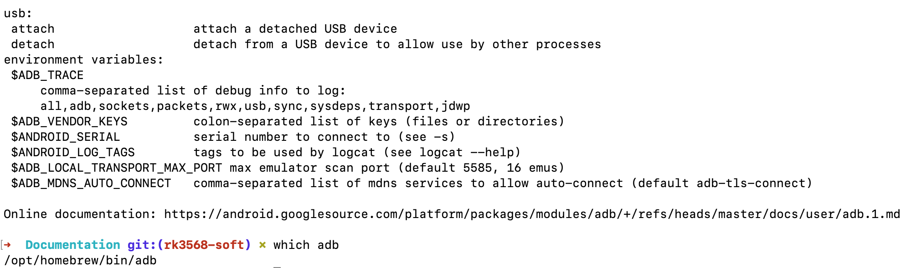
Type adb in Your Terminal to Confirm a Successful Installation of Android Platform Tools
Connect From Serial Port¶
In our prebuilt Android 11 OS, the RS232_2 serves as a serial debug port on the RK3568 products of all screen sizes. We can connect a RS232 cable from the Chipsee industrial PC to our workstation, allowing us to control the Chipsee industrial PC from our workstation.
To get started, except for the Chipsee industrial PC and your computer, you also need a USB to serial cable, we will use a USB Type-C to DB-9 cable as an example.
I will plug the USB Type-C port to a Mac (Windows and Linux work fine too), and then I would use three female to female dupont wires, to connect 3 of the DB-9 pins to my Chipsee industrial PC ‘s GND and RS232_2 (RX and TX) pins. Take a look at the image below, it’s a 7-inch product, if your product has a different screen size, check out the hardware document to find out which pins are RS232_2 TX and RX. You should connect the DB-9 RX to Chipsee industrial PC’s TX, and TX to RX, you should also connect their GNDs (the white wire).
{kind=link}
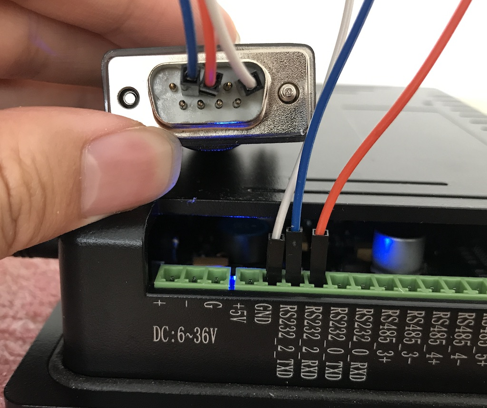
Connect 3 Pins with Dupont Wires
{kind=link}
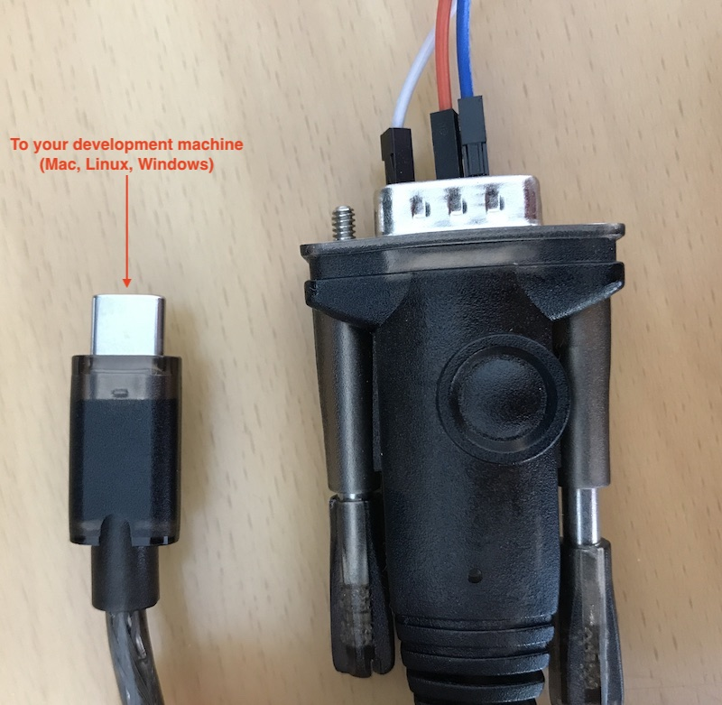
Use a USB to Serial Cable to Connect the Chipsee Industrial PC with Your Workstation
For MacOS and Linux users, you will need a program called screen. It should be already installed on most MacOS and Linux distributions. Open your terminal and type screen -v. If the screen program is already installed in your computer, you should see a version number, like that in the image below:
{kind=link}
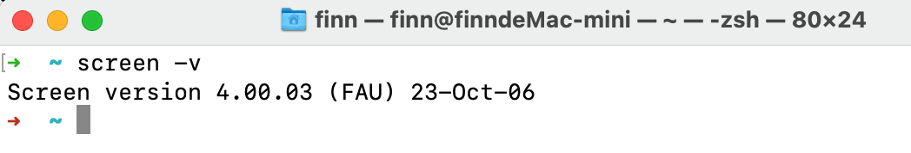
Confirm You Have the Screen Program (MacOS & Linux)
And then, let’s check what device our USB to RS232 cable in our operating system is. You should type a command in your terminal to find it out, different cables may appear as different devices in your OS:
ls /dev/tty.*
You might see many tty devices listed in your terminal, and cannot decide which is your USB to RS232 cable. Here is a tip: you can unplug the cable first, type the command to see what is listed in the OS. Then you plug it back in, and test again, to see what has recently appeared. The difference between the two should be your cable. In the image below, we found the /dev/tty.usbserial-10 is our USB to RS232 cable.
{kind=link}
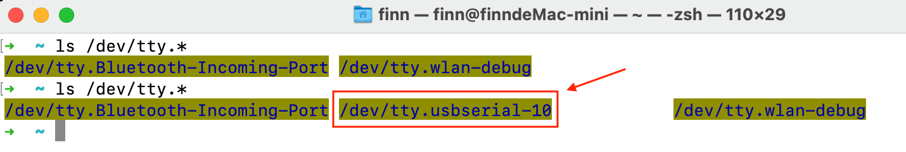
Find Out Which Device is Your USB to Serial Cable
Finally, you can put the device you found to the screen program as a parameter. To connect to your Chipsee industrial PC:
screen /dev/tty.usbserial-10 115200
There should be a few seconds of blank screen, then you might see some health checks pop up in your terminal, you can hit Enter or type some commands to see if you can interact with your Chipsee industrial PC. In the image below, the Android Chipsee industrial PC responds to my ls command.
{kind=link}
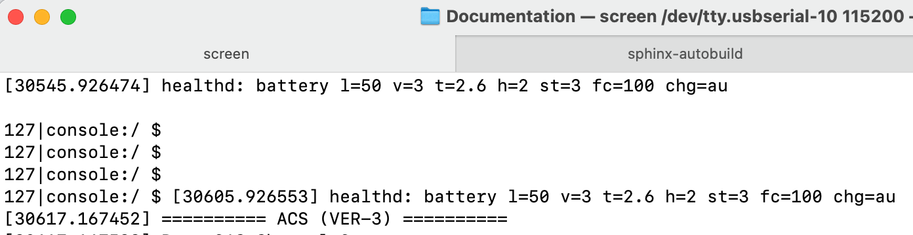
{kind=link}
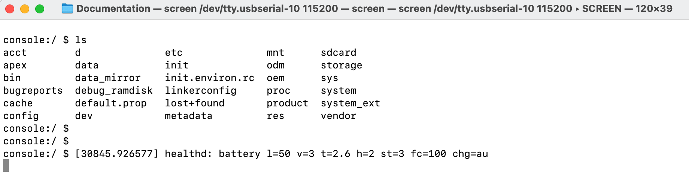
The Screen Program Connects Your Workstation to the Industrial PC’s Android Console
If you want to exit the screen program, you can press Ctrl+A then press K.
The program will ask you if you want to kill this window, then press y to exit the program.
{kind=link}
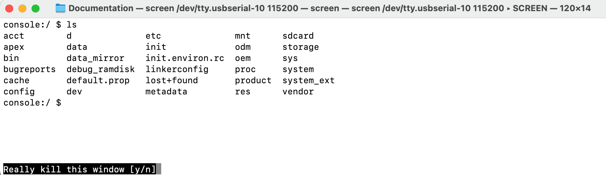
Press “Ctrl + A” Follow by a “K” to Exit the Program
For Windows users, you should install a program called PuTTY, here is a link to download the software: https://www.putty.org/. If you’re comfortable with other clients rather than PuTTY, you can use those as well. There are no hard requirements when you wish to develop on a Chipsee industrial PC. This Chipsee industrial PC is an Android device in the end, that’s also one benefit of embracing open technologies – no vendor lock-in, use your preferred developer tools.
With PuTTY in your belt, let’s find out which COM port your USB to RS232 cable is using. One tip is to check the Microsoft Windows Device Manager. Check which COM port appears/disappears when you plug/unplug the USB to serial cable. And that COM port device should be your USB to RS232 cable. When you have found the COM port your serial cable is using, let’s say it’s “your-com”, or “COM3” in this example.
Open the PuTTY program, select Session, choose Serial in the radio buttons, and fill the COM port you found previously in the Microsoft Windows Device Manager, and choose 115200 as baud rate, then click Open.
{kind=link}
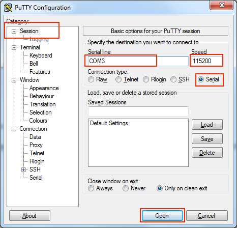
Input your-com in the Serial Line field, in our case COM3
Now you should be able to connect from your workstation to the Chipsee industrial PC through the serial port. You can try to hit Enter, or type some commands, like ls, to see if the Chipsee industrial PC replies to your commands.
Connect From USB Type-C Port¶
Apart from the serial port, you can also connect to the Chipsee industrial PC through its Type-C port. In this case, make sure you have Android Platform Tools installed on your development computer. Let’s take a look at how we can connect through USB.
For either Windows or MacOS/Linux users, firstly you need a USB Type-C cable. It can be a Type-C to Type-C, or Type-A to Type-C, at least one end needs to be Type-C, because it needs to be plugged into the Chipsee industrial PC’s Type-C port. Secondly be sure the Android Platform Tools is installed on your workstation. The image below is a 7 inch RK3568 powered Chipsee industrial PC, your product should have a Type-C port as well.
{kind=link}
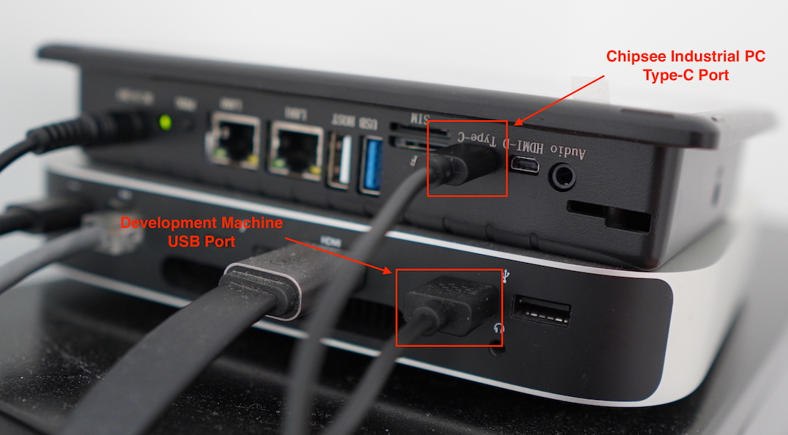
Connect Your Workstation to Chipsee Industrial PC’s Type-C Port
When you plug in the USB cable properly, you can hear a sound, and see there is a pop up notification, telling you USB debugging is connected on your Chipsee industrial PC:
{kind=link}
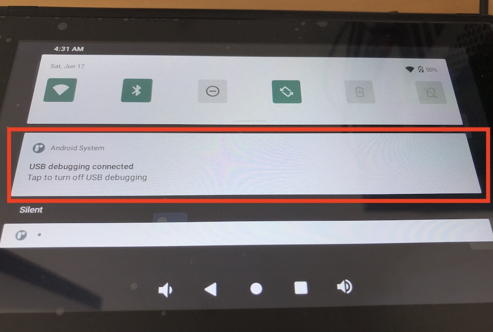
Plugging in the USB Cable Should Trigger a Notification
USB debugging is enabled by default, if yours isn’t responding as expected, you may check whether USB debugging is set correctly on your Chipsee industrial PC, USB debugging should be enabled. Also check your USB cable to ensure your USB cable can transmit data, rather than only supports charging.
Now that the cable is connected successfully, let’s connect the two with software.
For MacOS and Linux users, you can open your terminal, and type a command:
adb devices
You should see your Chipsee industrial PC listed in the outputs, like in the image below:
{kind=link}
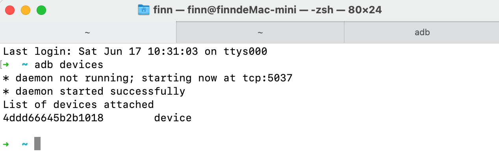
4ddd66645b2b1018 is our Chipsee Android Device
And then you can connect to this device with another command:
adb shell
You might see a rk3568 followed by a dollar ($) sign, indicating you’re sending commands to the Chipsee industrial PC’s Android system in the ADB shell.
{kind=link}
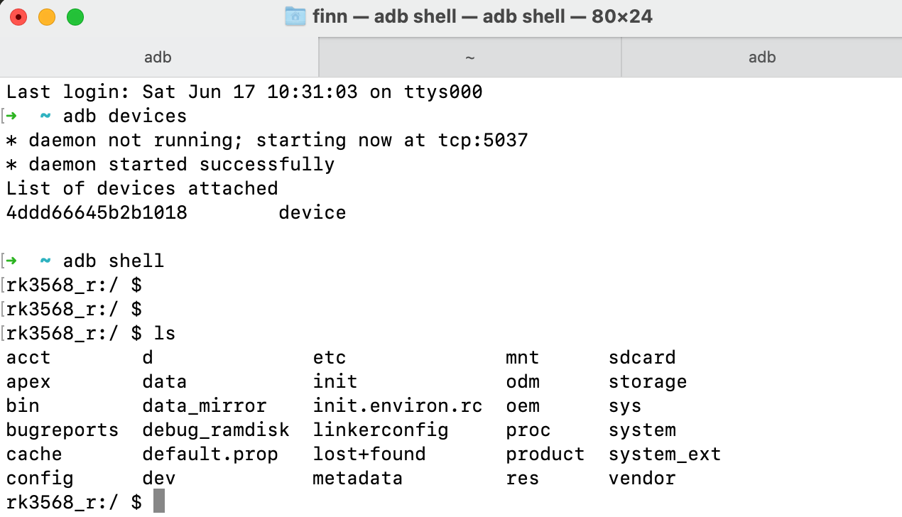
Now We Are Connected From USB Type-C Port
You can type exit or hit Ctrl + D to exit the ADB shell, to get back to your workstation’s terminal.
Connect From Wi-Fi¶
Debugging from Wifi is enabled by default. Also, please keep USB debugging enabled, even though you’re not connecting through the Type-C port. Make sure you have Android Platform Tools installed on your development computer.
To start debugging wirelessly, make sure your Chipsee industrial PC and your workstation are connected to the same Wifi network.
We will need your Chipsee industrial PC’s IP address to start connecting, you can check your Chipsee industrial PC’s IP address in Settings - Network & internet - Wi-Fi - your WiFi ssid (Network details) - Advanced - IP address:
{kind=link}
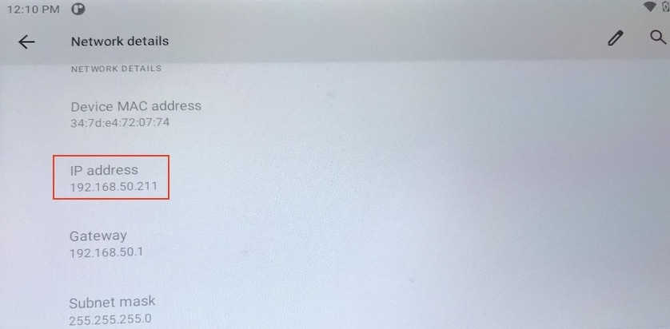
Check Your Android PC’s IP Address, in Our Case: 192.168.50.211
For MacOS and Linux users, you can then type a command to connect to your Chipsee industrial PC wirelessly in the terminal:
adb connect your-ip
In our case, “your-ip” is 192.168.50.211, yours should be a different value, maybe it starts with 172 or 10.0 or 192 etc, it depends on your office network configuration.
If connected successfully, you should see a connected to your-ip:5555 message in the terminal.
{kind=link}
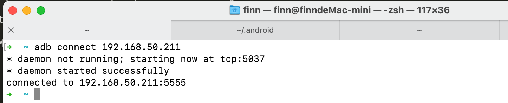
Successfully Connected to Android PC
Let’s get into the adb shell by typing:
adb shell
Then you can type some commands, like ls, as shown in the image below. If you experience a lot of input lags, a poor Wifi connection might be one of the reasons, try moving to a place with better Wifi signal.
{kind=link}
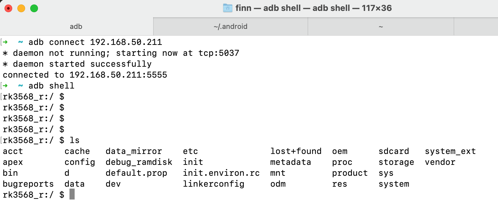
Use adb shell to Get into the Shell of Your Android PC
To exit the shell, you can either hit Ctrl + D or type exit.
If you have other problems when debugging through Wifi, you can also search for the official Android Developer documents, the Chipsee industrial PC is running a full Android operating system, other knowledge of Android development applies to this device as well.
Connect From Ethernet¶
Apart from serial port, USB cable and Wifi, connecting and debugging through Ethernet is another choice for developers.
Firstly, plug in an RJ-45 Ethernet cable, to connect your Chipsee industrial PC to the same network of your workstation. The 5 inch or 10.1 inch and above products have only one RJ-45 port. The 7 inch product has two RJ-45 ports, you can use either one.
Then you can find the IP address in Settings - About tablet - IP address. We will need this value to connect from our workstation with adb later. Let’s say it’s your-ip, in our case it is 192.168.50.83, as shown in the image below. Yours might be a different value, maybe it starts with 172 or 10.0 or 192 etc, it depends on your office network configuration.
{kind=link}
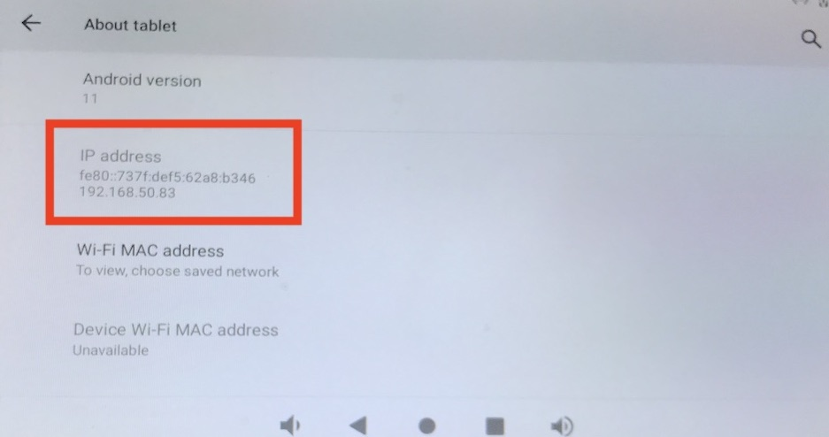
Our IP is 192.168.50.83, Yours Might be Different
For MacOS and Linux users, open your terminal, and type a command:
adb connect your-ip
In our case, “your-ip” is 192.168.50.83:
{kind=link}
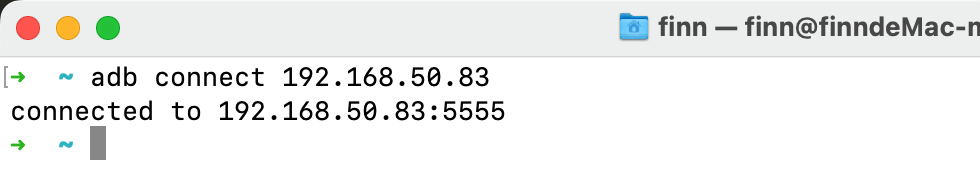
A Successful Connection
If your connection to the Chipsee industrial PC is established, you should see connected to your-ip:5555.
Then let’s get into the adb shell by:
adb shell
You can type some commands to interact with your Chipsee industrial PC inside the shell, like ls, to check if you have successfully gotten into the Android shell.
{kind=link}
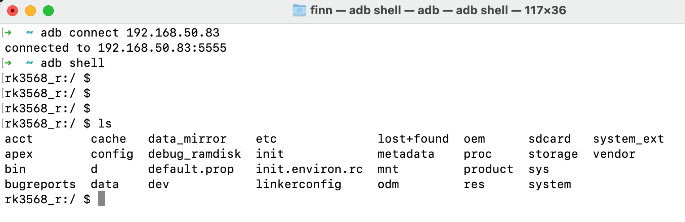
Use adb shell to Get into the Shell of Your Android PC
To exit the shell, you can either hit Ctrl + D or type exit.
Common Issues for Connecting¶
You might encounter unexpected behaviours when you’re connecting to the Chipsee industrial PC from your workstation, here are some common issues we’ve seen.
The prompt says: “adb: more than one device/emulator”.
{kind=link}
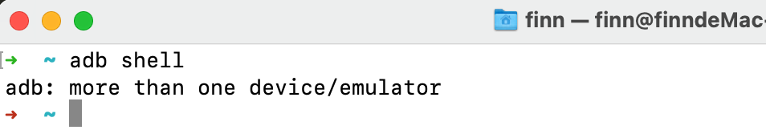
The Prompt Says “adb: more than one device/emulator”
When you use adb shell, and there are more than one device, the adb might be confused about which to connect. This happens when you’ve been trying to connect to the Chipsee industrial PC from more than one method. You can confirm this situation by entering adb devices, you should see more than one device listed.
{kind=link}
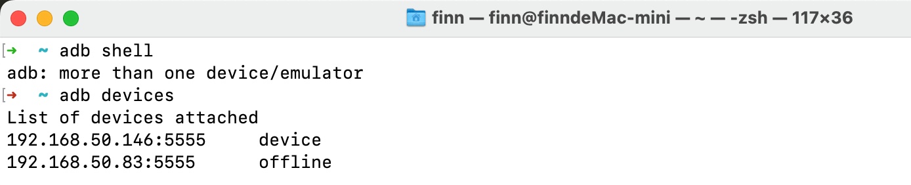
More Than One Devices are Listed
In this case, you can add a -s to specify which device you want to connect.
adb -s 192.168.50.146:5555 shell
If you prefer the USB, use:
adb -d shell
Or prefer TCP/IP:
adb -e shell
You can also disconnect all devices by:
adb disconnect
And kill the adb server by:
adb kill-server
You can also shut down the Chipsee industrial PC with adb:
adb shell reboot -p # -p means --poweroff
There are far more options you can try with adb, to learn more, you can search for “adb usages” on the Internet, or check out the official Android Developer documents. Adb is not a Chipsee vender specific tool, you can find a lot of tutorials about adb on the Internet.
Install an APK¶
To install an app from your workstation to the Chipsee industrial PC, we’ll also need the help of adb.
You should download or compile an APK file you want to install on your workstation, put it in a folder you can find, such as Downloads folder.
For MacOS and Linux users, you can open a terminal window, connect to your Chipsee industrial PC like explained in the previous chapter, but don’t get into shell.
Let’s say we have a copy of Jellyfin-Android apk in our Downloads folder:
{kind=link}
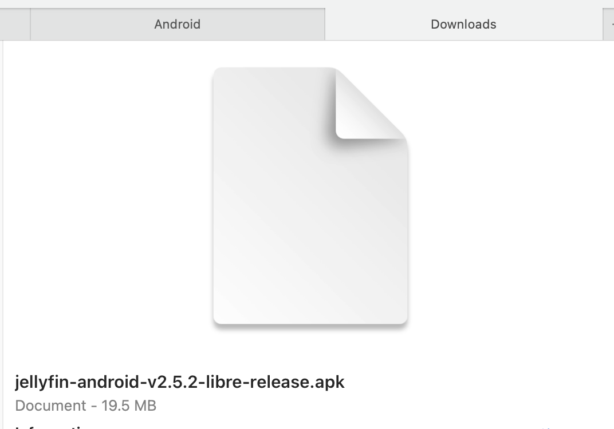
Prepare Your APK File
Then we can type adb install path-to-file to install it to our Chipsee industrial PC’s Android system. Take care of the relative file path, you can use an absolute path as well.
adb install Downloads/jellyfin-android-v2.5.2-libre-release.apk
It might take a minute to get one app installed, you should see a success in the terminal after the installation is finished successfully.
{kind=link}
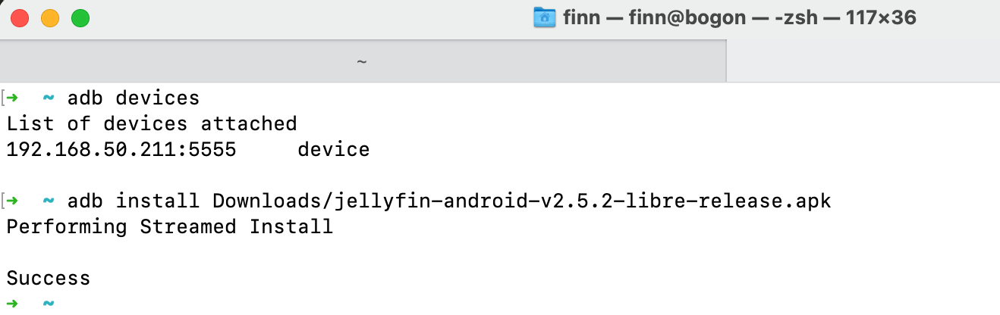
Installation Finished After 1 Minute
You can check the Chipsee industrial PC from its screen, and confirm your app is installed successfully:
{kind=link}
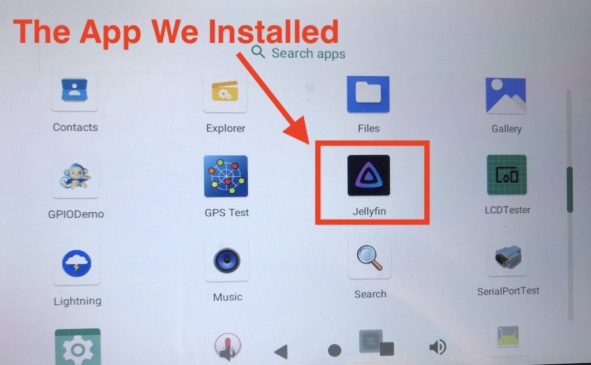
The App We Just Installed is on our Android PC
Hardware Resources in the OS¶
Now that you have successfully booted the Chipsee industrial PC and connected the Chipsee industrial PC to your laptop/computer, this section will tell you how to control this Chipsee industrial PC from its OS desktop itself, or from your PC.
Network¶
You can use the native Android network API or the settings menu to change network configuration.
Serial Port RS232 and RS485¶
The RK3568 based Chipsee industrial PC supports RS232 and RS485, here are the mapping from the port name to the system tree device:
5 inch product
Name |
Node |
Protocol |
|---|---|---|
RS232_0 |
/dev/ttyS0 |
RS232 |
RS232_2 |
/dev/ttyFIQ0 |
RS232, Serial Debug |
RS485_3 |
/dev/ttyS3 |
RS485 |
RS485_5 |
/dev/ttyS4 |
RS485 |
7 inch product and Box product
Name |
Node |
Protocol |
|---|---|---|
RS232_0 |
/dev/ttyS0 |
RS232 |
RS232_2 |
/dev/ttyFIQ0 |
RS232, Serial Debug |
RS485_3 |
/dev/ttyS3 |
RS485 |
RS485_4 |
/dev/ttyS4 |
RS485 |
RS485_5 |
/dev/ttyS5 |
RS485 |
10.1+ inch products
Name |
Node |
Protocol |
|---|---|---|
RS232_0 |
/dev/ttyS0 |
RS232 |
RS232_2 |
/dev/ttyFIQ0 |
RS232, Serial Debug |
RS485_3 |
/dev/ttyS3 |
RS485 |
RS485_4 |
/dev/ttyS4 |
RS485 |
The 120 Ohm match resistor is already mounted on the RS485 port. RS485 ports are half-duplex, the hardware can switch the Tx/Rx direction automatically. RS232 ports are full-duplex.
We know of 3 methods to interact with RS232 and RS485 in Android OS, sadly Android API does not support native ttyS* RS232 and RS485 devices, so people usually use JNI to add some C code to interact with serial ports, we’ll show you what we know, because we are not experts in Android developments, we hope these methods can give software engineer experts like you some inspiration.
Method 1: Google Serialport-Api App¶
The first method is an Android app Google built in 2009, they open sourced their code at: https://code.google.com/archive/p/android-serialport-api/. This app is also installed on the Chipsee industrial PC out of the factory, the app’s name is “SerialPortTest”. You can learn from the source code if you’re building your own serial port app. There are also forks of this app on Github, some improves the app by adding more features like supporting a parity bit or flow control. You can search android serial api to find out more on the Internet.
{kind=link}
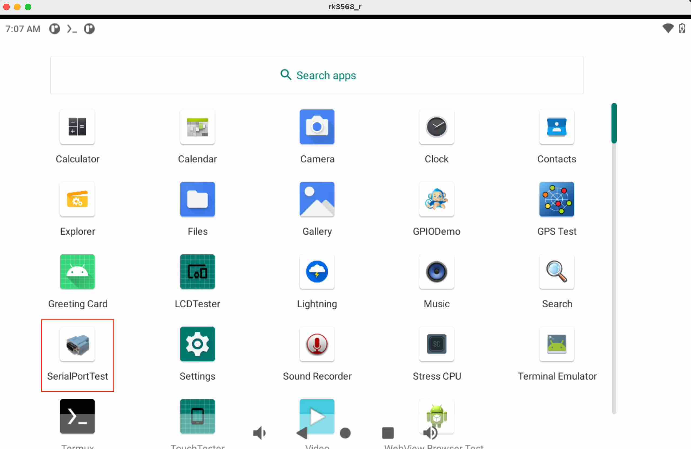
When you first get your Chipsee industrial PC, and looking to develop a program that involves serial ports, it’s recommended to first test against the app Google built. For example, you have two Chipsee industrial PCs, you should wire the RS232/RS485 port of two devices, and launch this app on both devices. You then set the baud rate, send messages from one device to another, and see if you can get the correct message on the other device. In this way, you can confirm you’re wiring the hardware pins correctly.
Then, if you have developed your app, you can install it on one of the devices, and still use this app on the other device to test your app. In this way, you make sure at least one device is working correctly, and if things go wrong, you can be confident it should be your code’s problem, and then you gradually debug to fix the program.
If you have one device, you can use the approach above to test it with your workstation, there are serial debug tools available on Windows, Mac or Linux. Use a USB to serial RS232/RS485 cable to connect them, beware the serial cable is NOT a USB-to-TTL converter, the TTL voltage is not the same as RS232/RS485.
{kind=link}
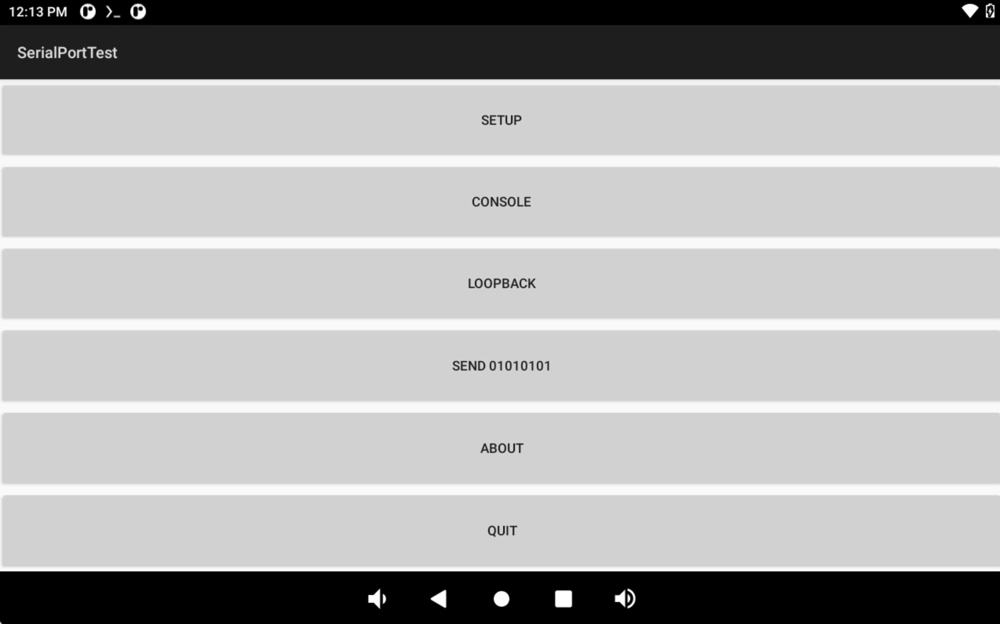
{kind=link}
The image above shows we can use Google’s app to test serial port. On the left is our workstation running a COMTool, on the right is the Android app, they are connected with a RS232 to USB cable.
Method 2: ADB¶
The second method is using adb, cat and echo programs. You can wire the device’s serial port to another device or your workstation, if you use two devices to communicate with each other, open two adb shells on your terminal app, each window should belong to one of the devices. In the example below, I will let the device talk to my Mac Mini, and use another tool on Mac called COMTool, it’s a serial debugger you can download from Github.
{kind=link}
At the beginning you may wish to set the baud rate of the Chipsee industrial PC’s serial devices, you can use stty, the command below will set ttyS0 (our RS232_0) to 115200 baud rate.
stty -F /dev/ttyS0 115200
In the first window, you use cat program to listen for RS232/RS485 message:
cat /dev/ttyS0
Note
If you’ve been running some programs before, like a pyserial Python script (yes it’s possible on Android!), the cat program might exit immediately. You can use a stty command to set most settings back to defaults (canonical), for more information, here is a doc for stty: https://man7.org/linux/man-pages/man1/stty.1.html.
stty -F /dev/ttyS0 icanon
And then use cat /dev/ttyS0 again.
You should see this cat program seems blocking, and it’s waiting for messages. Then we use our workstation to send a command through the serial port wire:
{kind=link}
The image above shows the Mac’s COMTool sent multiple “Hello from Chipsee!” to the Chipsee industrial PC using RS232.
To send message from Chipsee industrial PC and receive them in our workstation, we can use echo:
echo -n -e "Greetings from Chipsee!\r" > /dev/ttyS0
{kind=link}
This is one way to send and receive message from ADB, the ttyS* are our serial port RS232/RS485 devices represented by Linux files in Android OS. Hopefully, an Android developer could find this useful for building his Android native apps.
Method 3: Flutter Android¶
The third method is a Flutter app. We made an Android app with Flutter in this repo: https://github.com/printfinn/chipsee_serial_port_flutter.

Here is a video of how to read data from serial port: https://www.youtube.com/watch?v=VQrIEv66WFE.
Here is a video of how to write data to serial port: https://www.youtube.com/watch?v=LlE8OHMz-lk&t
Method 4: Termux¶
The fourth method is a workaround, even if it does not compile to an Android APK, it gives a similar user experience. It uses an Android app called Termux, which is an emulator that turns your Android to a Linux environment. With Termux, you can use the programming tools and languages you’re familiar with, like Python, JavaScript. In this Termux Linux environment, you still have access to the Android’s Chipsee hardware, like the RS232 and RS485 devices, through ttyS* files nodes. Then you can start a program to listen for incoming requests, such as a web server, then open a web page to send requests to this server. There are other solutions as well.
You can read the Termux’s official doc to learn how to install your preferred Linux tools, for example, we installed Python 3.11 (in July, 2023):
{kind=link}
In the image above, it shows we can login to the Android Chipsee industrial PC through ssh, and we have Python3 installed, we are also able to find our ttyS* devices (our RS232 RS485 devices).
We built a demo Python Flask web app targeting Debian OS, but it can also run on the Termux environment in Android OS, and the RS232, RS485 controlled by the pyserial library are fully functional as well. We can then open a browser or a webview Android app to visit the local IP address hosted by the Termux Linux environment on the Android to interact with RS232/RS485.
{kind=link}
The image above shows we can communicate through RS485 between our workstation and Chipsee industrial PC. On the left is my workstation Mac, on the right is a screen of our Chipsee industrial PC. The Flask Python web server running in the Termux picks up the messages from ttyS3 (our RS485_3) using pyserial library, and then the Python server sends a command through websocket to the webview (think about a webview as a less powerful web browser Android app), then JavaScript in the webview picks up the message and displays them in the Android’s screen as a HTML file.
To use the third method in your development, you can find out how Termux can auto boot your server program with Termux:Boot; and build a simple Android native APK that integrates a webview to visit your server’s web port as soon as the APK is started; then start your app automatically on system boot. In this way, when your Chipsee industrial PC boots, your program is ready to use without having to type commands in Termux.
The source code of this demo app is in Chipsee’s Github: https://github.com/Chipsee/chipsee-industrial-pc-web. If you’re looking to use the approach above, or to develop your program on Debian Linux, you can refer to the repo, it’s a Python program with HTML web pages. Except for serial ports, it has code to control buzzer, gpio, backlight, CAN and implemented a Modbus server/client as well.
Those are the three methods we know of that can control the RS232/RS485 devices on Android.
GPIO¶
There are 8 GPIOs, 4 Output, and 4 Input, they are all isolated. You can control the output or input pin voltage by feeding the VDD_ISO suite voltage. The pin voltage should be from 5V to 24V. Refer to the tables below for a detailed port definition:
Function |
Device Node |
|---|---|
IN1 |
/dev/chipsee-gpio5 |
IN2 |
/dev/chipsee-gpio6 |
IN3 |
/dev/chipsee-gpio7 |
IN4 |
/dev/chipsee-gpio8 |
OUT1 |
/dev/chipsee-gpio1 |
OUT2 |
/dev/chipsee-gpio2 |
OUT3 |
/dev/chipsee-gpio3 |
OUT4 |
/dev/chipsee-gpio4 |
- Set OUT1 to high or low
$ echo 1 > /dev/chipsee-gpio1 # set OUT1 to high $ echo 0 > /dev/chipsee-gpio1 # set OUT1 to low
- Get IN1 value
$ cat /dev/chipsee-gpio5 # value 1 indicates high, value 0 indicates low
GPIO devices are already exported as 8 Linux files in the Android OS, they are /dev/chipsee-gpio1 ~ /dev/chipsee-gpio8.
To use GPIO in your program, there are also two methods:
The first method is to read the file or write 0/1 to the file to control GPIO in adb. Similarly, you can also build Android APK and use Kotlin or Java to read/write those files to control GPIO.
The second method is the workaround we addressed in the serial port RS232/RS485 section. We can use Termux to take advantage of a Linux environment and are still able to use the /dev/chipsee-gpio1~8 device nodes.
Here is an demo we made in Python and webview running in Android:
{kind=link}
The image above shows 8 GPIO ports in a webview (similar to a web browser, but in a limited Android app), the 4 round icons above are 4 GPIO output pins, among them the OUT_2 is set to high voltage by tapping the screen. We can confirm this in the left top window, when we cat the /dev/chipsee-gpio2, it returns a “1”, indicating a high voltage.
The 4 round icons in the bottom are 4 GPIO input pins, because we are not applying voltages to them, they all appear as red cross, meaning they are “0”. If we apply a logic high to any pin, it would turn green.
This GPIO demo is a Python program, like it is discussed in the serial port section, it’s running in the Linux environment on Android OS using Termux. The program starts a Flask web server, listens for requests from the webview. In the webview part, JavaScript polls the Python web server to know if the content in the HTML should be changed, then Python reads/writes contents of 8 /dev/chipsee-gpio* files to know the status of the input pins or make a change to the output pins.
To test the GPIO, there is a GPIODemo app made by Chipsee pre installed in your Android OS:
{kind=link}
Inside the app, you can test GPIO outputs and inputs, as well as Buzzer.
{kind=link}
BUZZER¶
Inside ADB, you can echo 0 or 1 to control the buzzer.
The Chipsee industrial PC has one buzzer. We have created one symbol link to /dev/buzzer. You can control it as follows:
$ echo 1 > /dev/buzzer # enable buzzer
$ echo 0 > /dev/buzzer # disable buzzer
As shown in the GPIO section, you can test buzzer in the GPIODemo app.
{kind=link}
The red square has a buzzer switch, when you toggle the switch, the internal buzzer will be enabled.
You can also use Termux and Linux plus your favourite programming language to control buzzer:
{kind=link}
The image above is a Python plus webview demo for controlling buzzer. Same Termux Linux environment as GPIO and Serial Port sections.
Backlight¶
Android OS has native backlight API.
Multitouch Test¶
You can test the touch screen with the preinstalled TouchTester app:
{kind=link}
For different Chipsee industrial PC models, some supports 5-point multitouch, some supports 10-point multitouch.
{kind=link}
The image above shows a 10.1 inch Chipsee industrial PC supporting 10 point multitouch.
- pdf-build
False
Debian 11 OS¶
Debian 11 OS on RK3568 User Manual
This is the software manual for RK3568 Chipsee industrial PC. If you’ve never developed on this hardware with a Debian 11 OS, this manual can get you started quickly.
Supported Chipsee PCs: all Chipsee RK3568 based industrial PCs, including but not limited to:
CS12720-RK3568-050P
CS10600-RK3568-070P
CS12800-RK3568-101P
CS10768-RK3568-121P
CS19108-RK3568-133P
CS10768-RK3568-150P
CS19108-RK3568-156P
CS12800-RK3568-215P
CS19108-RK3568-236P
CS-RK3568-BOX
When you develop software for the Chipsee industrial PC, you can open the hardware document beside this software document, to aid you in wiring your devices.
In this document, main topics are:
How to connect to the hardware from your workstation.
How to use the hardware resources such as RS232, RS485 and GPIO, etc.
How to install a new operating system.
System Information¶
Out of Box System
Description |
|
|---|---|
Kernel |
5.10.110 |
Bootloader |
U-Boot 2017.09 |
OS |
Debian GNU/Linux 11 (bullseye) aarch64 |
Python |
3.9.2 |
Qt |
5.15.2, QMake 3.1 |
GCC |
10.2.1 |
username/password |
[linaro/linaro] |
Window Manager |
Xfwm4 |
Desktop Environment |
Xfce 4.16 |
Prepare for Developing¶
To get started, you first need to power on the Chipsee industrial PC, then you may want to connect to this PC from your own laptop or computer to control it. Let’s prepare some hardware and software to start developing.
Prepare the Hardware¶
To power on and connect to Chipsee industrial PC, we need:
A power adaptor. For products with a screen of 7 inch and below, a power adaptor with 6V ~ 36V DC output is required; for 10.1 inch and above products, you need one with 12V ~ 36V.
A USB to serial cable (if you need serial debug).
An Ethernet cable (if you want to SSH into the Chipsee industrial PC). You may also use WiFi if your Chipsee industrial PC supports WiFi, in this case you don’t need the Ethernet cable.
A USB type-C cable (if you want to flash a new OS).
Prepare the Software¶
Thanks to the Debian 11 OS, developing on Chipsee industrial PC isn’t really different from developing on any other PCs, you can use any developer software you’re comfortable with, with only one exception for flashing OS.
To flash a new operating system, you need RKDevtool, you can refer to the Flashing OS Image section.
The software listed below are not mandatory, they’re recommendations because we find them easy to use:
To SSH into a Chipsee industrial PC, you may find PuTTY on Windows handy; for Linux and macOS users, a terminal app should come with your OS out of box, like Terminal/iTerm2 on macOS and xterm on Linux.
To use a remote desktop, you can download VNC Viewer on your laptop or PC.
Connecting to the Chipsee industrial PC¶
When a power supply is plugged, the Chipsee industrial PC should boot itself automatically, next let’s connect to it from our laptop or computer.
There are three different approaches: serial port debugging, SSH with Ethernet/WiFi and remote desktop with VNC.
Serial Port Debugging¶
[Cheatsheet for experienced developer: username: linaro, password linaro.]
Physically, your laptop connects to your Chipsee industrial PC with a USB to serial cable. To connect to the Chipsee industrial PC in the terminal program, you first need to know what port your laptop or computer is using in the device tree.
The best way to find this is check what tty devices you have before connecting the Chipsee industrial PC to your computer, then find out what is changed after you connect it to your laptop or PC.
Take macOS as an example:
# on your laptop
ls /dev/tty.*
You may see:
# ➜ ~ ls /dev/tty.*
# /dev/tty.Bluetooth-Incoming-Port /dev/tty.wlan-debug
# ➜ ~
It means there is a Bluetooth and a wlan port before you plug the Chipsee industrial PC to your Macbook.
Now you can plug the USB end to your laptop or computer, connect the serial port end to your Chipsee industrial PC’s RS232 port. For different products the pins may vary, you can check the pin definition table to find out which pins are the RS232 TX, RX, GND for serial debugging.
And let’s check again what has changed after we connect the two:
# on your laptop, check again
ls /dev/tty.*
You might see:
# ➜ ~ ls /dev/tty.*
# /dev/tty.Bluetooth-Incoming-Port /dev/tty.wlan-debug /dev/tty.usbmodem2812
# ➜ ~
You can tell the last /dev/tty.usbmodem2812 appeared right after we plug in the cable, and this is the serial port that connects to your Chipsee industrial PC with your USB to serial cable.
For Windows and Linux users the approach is almost the same, on Windows you may check the Microsoft Windows Device Manager. And check which COM port appears/disappears when you plug/unplug the USB to serial cable.
Now that we know the port on our OS, let’s use the terminal program to connect to it.
Take macOS as an example:
# on your laptop
screen /dev/tty.usbmodem2812 115200
Use the screen command followed by the port name (in our case usbmodem2812), and a baud rate to connect to this serial port.
After a few seconds, in your terminal you should see some text, asking for a username and password. In our RK3568 based system, we should input linaro for the username, and also linaro for the password.
For Windows users who use PuTTY, you should select Session, choose Serial in the radio buttons, and choose the COM port you found in the previous procedure, say COM3, and choose 115200 as baud rate, then click Open. When it asks for a username and password, give linaro for username and also linaro for password.
Input your-com in the Serial Line field, in our case COM3
That’s it for connecting the Chipsee industrial PC to your machine with a serial debug port.
SSH Connect¶
[Cheatsheet for experienced developer: username: linaro, password: linaro, IP check: sudo ifconfig.]
If you have a network connecting the Chipsee industrial PC and your laptop or computer, you may find SSH comes handy.
To connect to your Chipsee industrial PC with SSH, you need to plug an Ethernet cable to the RJ45 port, or connect through WiFi if your product supports WiFi.
You will need to know the IP address of your Chipsee industrial PC to use SSH, to find out which, you can use a mouse and keyboard temporarily and type:
# type this in your Chipsee PC's xterm program to find out the IP address of this device:
$ sudo ifconfig
You should see a bunch of outputs, look for the keyword eth and inet, they will turn out to be your IP address, for example:
eth0: flags=4163<UP,BROADCAST,RUNNING,MULTICAST> mtu 1500
inet 192.168.6.134 netmask 255.255.255.0 broadcast 192.168.6.255
inet6 fe80::c3be:d086:e810:ee8e prefixlen 64 scopeid 0x20<link>
......
lo: flags=73<UP,LOOPBACK,RUNNING> mtu 65536
inet 127.0.0.1 netmask 255.0.0.0
inet6 ::1 prefixlen 128 scopeid 0x10<host>
......
p2p0: flags=4099<UP,BROADCAST,MULTICAST> mtu 1500
......
In our example, the IP address is 192.168.6.134.
Now that we have the IP of our Chipsee industrial PC, we can detach the mouse and keyboard, and go back to our laptop or computer to proceed.
We can now open a terminal app, like PuTTY on Windows, or Terminal/xterm on macOS/Linux.
For Windows users using PuTTY, you can choose Session, input username@your-ip (in our case linaro@192.168.6.134, yours should be different) in the Host Name field. Port Number should remain 22, choose SSH as the connection type in the radio buttons, click “Open”. When the prompt asks for the password, type linaro and hit enter.
{kind=link}
Input username@your-ip in the Host Name field, in our case linaro@192.168.6.134
For macOS/Linux, in your terminal program, type:
# change 192.168.6.134 to your Chipsee PC's IP we got earlier
ssh linaro@your-ip
# in our case, we are
ssh linaro@192.168.6.134
{kind=link}
Change the command to ssh username@your-ip, in our case ssh linaro@192.168.6.134
When the prompt asks for your password, input linaro, the password will not show up on the screen when you type it, it’s OK, just hit enter when you finish typing.
For both Windows and Linux/macOS users, we should have successfully ssh’d into our Chipsee industrial PC now.
Connect with VNC Remote Desktop¶
[Cheatsheet for experienced developer: username: linaro, password: linaro, IP check: sudo ifconfig, VNC port: 5900 (default port).]
We can have a graphical user interface if we use VNC to connect to our Chipsee industrial PC. This is handy if you’re developing an HMI and want to test from your own laptop or computer. Here is how:
First please refer to the previous section to learn how to find out your Chipsee industrial PC’s IP address. In our case we get 192.168.6.134.
Then, for either Windows, macOS or Linux users, please open the VNC Viewer software on your laptop or PC. In the input area, which has a placeholder “Enter a VNC server address or search”, you should input the IP address we obtained earlier: your-ip, in our case: 192.168.6.134 (yours should be different), and hit enter.
{kind=link}
Change the input to your-ip, in our case 192.168.6.134
VNC Viewer might ask for your credentials, you should input our username and password, in our case: username: linaro, password: linaro. And then continue, VNC Viewer might tell you the connection is not encrypted, it’s OK if you’re in your local network.
Now we should see our Chipsee industrial PC’s desktop GUI in the VNC Viewer software.
Hardware Resources in the OS¶
Now that you have successfully booted the Chipsee industrial PC and connected the Chipsee industrial PC to your laptop/computer, this section will tell you how to control this Chipsee industrial PC from its OS desktop itself, or from your PC.
Network¶
From the Chipsee industrial PC’s desktop GUI, you can click the Network icon in the menu bar to set your network.
{kind=link}
Network Settings
From the terminal, you can use nmcli to configure the network. You can refer to the documents of the nmcli program for more information. nmcli is not a Chipsee specific tool, it’s widely used in Linux distributions.
$ nmcli -o
eth0: connected to Wired connection 1
"eth0"
ethernet (rk_gmac-dwmac), 42:0B:6F:67:B0:E3, hw, mtu 1500
ip4 default
inet4 192.168.6.134/24
p2p0: disconnected
"p2p0"
wifi (rtl8821cs), B6:6D:C2:13:A3:AE, hw, mtu 1500
wlan0: disconnected
"wlan0"
wifi (rtl8821cs), B4:6D:C2:13:A3:AE, hw, mtu 1500
Serial Port RS232 and RS485¶
The RK3568 based Chipsee industrial PC supports RS232 and RS485, here are the mapping from the port name to the system tree device:
5 inch product
Name |
Node |
Protocol |
|---|---|---|
RS232_0 |
/dev/ttyS0 |
RS232 |
RS232_2 |
/dev/ttyFIQ0 |
RS232, Serial Debug |
RS485_3 |
/dev/ttyS3 |
RS485 |
RS485_5 |
/dev/ttyS4 |
RS485 |
7 inch product and Box product
Name |
Node |
Protocol |
|---|---|---|
RS232_0 |
/dev/ttyS0 |
RS232 |
RS232_2 |
/dev/ttyFIQ0 |
RS232, Serial Debug |
RS485_3 |
/dev/ttyS3 |
RS485 |
RS485_4 |
/dev/ttyS4 |
RS485 |
RS485_5 |
/dev/ttyS5 |
RS485 |
10.1+ inch products
Name |
Node |
Protocol |
|---|---|---|
RS232_0 |
/dev/ttyS0 |
RS232 |
RS232_2 |
/dev/ttyFIQ0 |
RS232, Serial Debug |
RS485_3 |
/dev/ttyS3 |
RS485 |
RS485_4 |
/dev/ttyS4 |
RS485 |
The 120 Ohm match resistor is already mounted on the RS485 port. RS485 ports are half-duplex, the hardware can switch the Tx/Rx direction automatically. RS232 ports are full-duplex.
You can install cutecom to test the serial port:
$ sudo apt-get install cutecom
Only root user and use the serial port:
$ sudo cutecom
You can then use two Chipsee industrial PCs to test each other.
If you’ve got only one Chipsee industrial PC, you can test that with your computer: you can use a USB to serial cable, connect the USB end to your computer, and connect the serial end to any of the Chipsee industrial PC’s serial port. You may also wish to install a UART/COM Assistant software which has a GUI for testing.
If you’re an experienced engineer, you can also use a programming language to test the serial ports, like C, C++, Python, Javascript. They have their libraries for controlling serial port devices.
GPIO¶
There are 8 GPIOs, 4 Output, and 4 Input, they are all isolated. You can control the output or input pin voltage by feeding the VDD_ISO suite voltage. The pin voltage should be from 5V to 24V. Refer to the tables below for a detailed port definition:
Function |
Device Node |
|---|---|
IN1 |
/dev/chipsee-gpio5 |
IN2 |
/dev/chipsee-gpio6 |
IN3 |
/dev/chipsee-gpio7 |
IN4 |
/dev/chipsee-gpio8 |
OUT1 |
/dev/chipsee-gpio1 |
OUT2 |
/dev/chipsee-gpio2 |
OUT3 |
/dev/chipsee-gpio3 |
OUT4 |
/dev/chipsee-gpio4 |
- Set OUT1 to high or low
$ echo 1 > /dev/chipsee-gpio1 # set OUT1 to high $ echo 0 > /dev/chipsee-gpio1 # set OUT1 to low
- Get IN1 value
$ cat /dev/chipsee-gpio5 # value 1 indicates high, value 0 indicates low
BUZZER¶
The Chipsee industrial PC has one buzzer. We have created one symbol link to /dev/buzzer. You can control it as follows:
$ echo 1 > /dev/buzzer # enable buzzer
$ echo 0 > /dev/buzzer # disable buzzer
Backlight¶
We use one PWM to control the backlight of RK3568 boards, You can use the following commands:
- Get the supported max brightness:
$ cat /sys/class/backlight/backlight/max_brightness
- Get the current brightness:
$ cat /sys/class/backlight/backlight/actual_brightness
- Set brightness:
# might require write permission to the brightness file if you're not root $ sudo chmod a+w /sys/class/backlight/backlight/brightness # then set the new brightness $ echo 50 > /sys/class/backlight/backlight/brightness
CAN Bus¶
There are two CAN bus channels on the RK3568 based Chipsee industrial PC. You can install can-utils and use them to test CAN. But you must add one 120Ω resistor between CAN_H and CAN_L on one of the two Boards, as shown on the figure below.
Note
The Chipsee IPC does not mount the 120Ω matched resistor on all CAN signals by default.

Figure 584: Connecting CAN¶
Here are a few examples to test CAN by using CAN units.
- Install can-utils if you haven’t.
$ sudo apt install can-utils
- Set the bit-rate to 50Kbits/sec with triple sampling using the following command (use ROOT user):
$ sudo ip link set can0 down $ sudo ip link set can0 type can bitrate 50000 triple-sampling on
- Bring up the device using the command:
$ sudo ip link set can0 up
- Transfer packets
$ sudo cansend can0 5A1#11.2233.44556677.88
- Receive data from CAN bus
$ sudo candump can0
- Bring down the device
$ sudo ip link set can0 down
FAQ¶
External Display Interferes with Touch Screen
When you connect to an external display, such as a 1920 x 1080 resolution display from the HDMI out port, the internal display needs to be scaled, otherwise the touch screen are not aligned correctly. You can set the touch screen and internal display in Display Setting.
For example, on the 5 inch device, the original display is 720x1080(rotated left), if you wish to connect to a 1920x1080 external display, external height/internal height = 1080/720 = 1.5; external width/internal width = 1920/1080=1.5. You need to set DSI scale to 1.5 like in the image below.
{kind=link}
Scale Internal Display when Attach an External Display
Alternatively, if you need a custom scale setting, you can use command line:
$ # Set the resolution according to your needs
$ # For example, if you use 7 inch RK3568 product with a 2K external display, then set it to 2560x1440
$ su linaro -c "DISPLAY=:0 xrandr --output DSI-1 --same-as HDMI-1 --scale-from 2560x1440"
{kind=link}
Scale Internal Display when Attach an External Display with Command Line
Flashing OS Image¶
Download Required Tools¶
If you want a fresh OS, you can flash your Chipsee industrial PC.
You need two tools to flash the OS image to the RK3568 PC. The first is DriverAssistant_v5.1.1, the second is RKDevTool_v2.93, you can download all of them here.
These tools are Windows executables, please execute them on a Windows machine.
If you’ve been using a prior version of DriverAssistant, click uninstall before installing DriverAssistant_v5.1.1.
{kind=link}
{kind=link}
Download Prebuilt OS Images¶
If you haven’t downloaded the prebuilt OS images, you can find one here.
Start Flashing¶
After installing the DriverAssistant, you can now start to flash an OS image to the RK3568 board with RKDevTool. Double click the program to start flashing. The tool has English and Chinese language support.
{kind=link}
STEP 1:
Connect the Type-C cable and power on the board. (If unexpected messages occur at any of the following steps, try plugging the Type-C cable again.)
Click Upgrade Firmware tab.
Click Firmware button to select a .img OS image file. The screenshots show a debian11 img file is selected, but this is applicable to other OSes as well.
{kind=link}
STEP 2:
Click Switch button to switch the device to a Loader device.
{kind=link}
STEP 3:
You should see “Found One LOADER Device”.
Click Advanced Function tab.
Click EraseAll button.
You should see “Erasing sectors success” on the right side logs.
{kind=link}
STEP 4:
Click Upgrade Firmware tab.
Click Upgrade button.
You should see Download Firmware progress on the right side logs.
{kind=link}
STEP 5:
After the download firmware progress goes to 100%, the board reboots itself automatically.
After a few minutes, you should see “Found One ADB Device”.
Now your new OS is ready for use.
{kind=link}
Video Tutorial for Flashing OS¶
Method 1: LOADER Mode¶
Here is a video tutorial we made demonstrating the OS installation process described above in Windows in the LOADER mode: https://www.youtube.com/watch?v=ufKDCJ1hpf4
The approach in the video above works best for devices that are still able to boot into the desktop, and when your workstation is a Windows machine. However, if you do not have a Windows machine in the room, you can use the approach below to flash an OS, in a Linux or Mac.
Method 2: MASKROM Mode¶
Apart from flashing in LOADER mode, when you’re working on a Linux(X86_64) workstation or MacOS(Intel and Apple Silicon) machine, you can use another approach: MASKROM mode, to flash the OS. There is a PROG button on the Chipsee industrial PC, you can press the button before powering up the device, power up and hold the PROG button for 2~4 seconds, then use a X86_64/darwin_64 upgrade_tool program in the command line to flash the OS, here is a video we made to teach you how to do that in two minutes: https://www.youtube.com/watch?v=TDIHoQ9AuX4
The approach described in the second video works best for devices that are “bricked” (compared to the first approach), it can help rescue your device if your operating system is broken and cannot boot into the desktop. Even if your device is still functional, you can also use this approach to flash an OS, it works in Windows, Linux as well as MacOS.
The command used in the videos are:
For Linux workstation:
sudo ./upgrade_tool_linux_x86-64 ld # to list device
sudo ./upgrade_tool_linux_x86-64 uf ./prebuilt-rk3568-xxx.img # to upload firmware
For MacOS:
./upgrade_tool_darwin64 ld # to list device
./upgrade_tool_darwin64 uf ./prebuilt-rk3568-xxx.img # to upload firmware
And that’s all it takes.
The upgrade_tool used in the video can be download at:
We’ve tested that the MacOS upgrade_tool can execute in M1/Apple Silicon Macs, but you will need to install Rosetta to run this program. For Intel Macs, you do not need Rosetta, you can execute the binary program directly in your terminal.
Also, as noted in the video, do use a absolute path to the firmware file or “./prebuilt-rk3568-xxx.img”, rather than a relative path (e.g. your current directory contains the img file, and you directly use “upgrad_tool uf prebuilt-rk3568-xxx.img”, this will not work). And make sure to use sudo in Linux.
Disclaimer¶
This document is provided strictly for informational purposes. Its contents are subject to change without notice. Chipsee assumes no responsibility for any errors that may occur in this document. Furthermore, Chipsee reserves the right to alter the hardware, software, and/or specifications set forth herein at any time without prior notice and undertakes no obligation to update the information contained in this document.
While every effort has been made to ensure the accuracy of the information contained herein, this document is not guaranteed to be error-free. Further, it does not offer any warranties or conditions, whether expressed orally or implied in law, including implied warranties and conditions of merchantability or fitness for a particular purpose. We specifically disclaim any liability with respect to this document, and no contractual obligations are formed either directly or indirectly by this document.
Despite our best efforts to maintain the accuracy of the information in this document, we assume no responsibility for errors or omissions, nor for damages resulting from the use of the information herein. Please note that Chipsee products are not authorized for use as critical components in life support devices or systems.
Technical Support¶
If you encounter any difficulties or have questions related to this document, we encourage you to refer to our other documentation for potential solutions. If you cannot find the solution you’re looking for, feel free to contact us. Please email Chipsee Technical Support at support@chipsee.com, providing all relevant information. We value your queries and suggestions and are committed to providing you with the assistance you require.